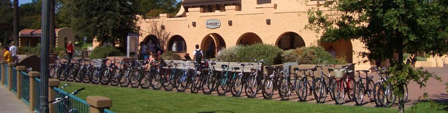

Berben Group Photos
home
·
research
·
publications
·
people

Menu:
Home
Louise Berben
Research
Projects
Publications
Collaborators
Group Info
People
Photos
Chemistry Links
Pt. Reyes Hike 2018
Tomales Point Hike 2015
Pt. Reyes Hike 2014
Larock Undergraduate Research Conference 2014
Fall Event 2013
Stevens Trail Hike 2013
Halloween 2012
Mt. Judah Hike 2012
Halloween 2011
Feather Falls Hike 2011
Rafting Spring 2010
New Lab